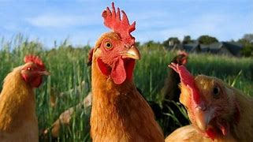
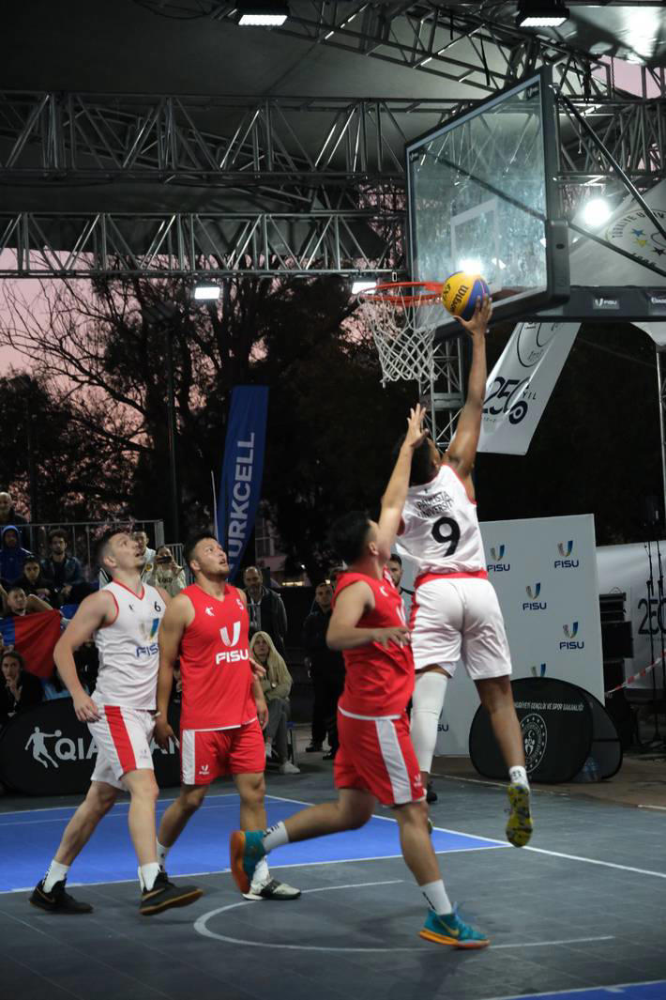

Quais as curiosidades sobre galinhas?
Curiosidades sobre as galinhas
Galinha é o nome popular da ave Gallus gallus.
É um dos animais mais domesticados do mundo. ...
O ovo da galinha é uma excelente fonte de proteínas, ferro e vitaminas B, E, B12.
Quando se alimenta, a galinha ingere junto com a comida pequenas pedras e terra.

Elon Musk fundou a Neuralink ainda em 2016, na Califórnia, como uma empresa de pesquisa médica, criando chips que podem ajudar pacientes em tratamentos. Em setembro do mesmo ano, os interesses iam além e as coisas ficaram um pouco mais claras, com o executivo explicando o seu desejo de criar uma forma de integrar a inteligência humana com a artificial, literalmente conectando o cérebro ao computador.
A preocupação do bilionário é tão grande que ele chegou a criar a empresa OpenAI, organização de pesquisa em inteligência artificial para diferentes propósitos. Porém, somente algo como a Neuralink poderia o ajudar a resolver esse problema. Então, no ano passado, Musk contou ao mundo que estava criando um minúsculo microchip que, na teoria, poderia ser implantado na cabeça de uma pessoa, vinculando eletrodos ao cérebro.
A equipe do São Paulo DC/Unip conquistou o bicampeonato da Copa do Mundo Universitária de Basquete 3x3, neste sábado, ao vencer a Macquarie University, da Austrália, por 20 a 10. André Augusto, Gianluca Campaner, Luiz Felipe de Paula e Lucas Nogueira ergueram a taça do torneio disputado na sexta-feira e neste sábado, em Istambul, na Turquia.
Após a partida, o manager do São Paulo DC/Unip, Gustavo Bracco, celebrou a conquista do bicampeonato mundial e ressaltou a importância do esporte e da educação. “Que orgulho ser bicampeão mundial. Sensação que desejo a todas as pessoas que acreditam e investem no esporte Basquete 3x3 tenham de poder estudar e ser um profissional e também atleta. Educação é o caminho da prosperidade. Mas é verdade. Somos bicampeões mundiais”, comemorou.